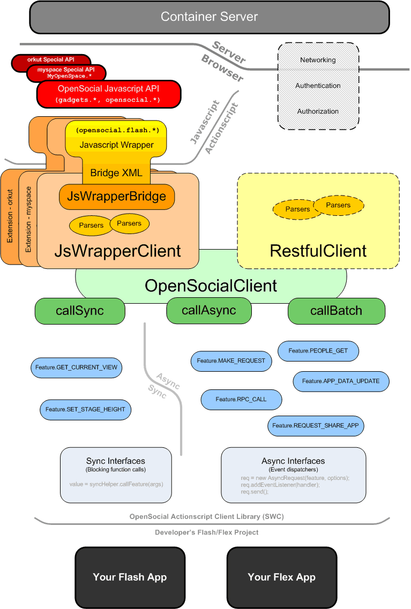

OrkutJsWrapperClient.AsyncDataRequest object, or add event handler for the BatchRequest object. Note that the handler on BatchRequest object will be invoked first. See this example as follow:
var batch:BatchRequest = new BatchRequest();
batch.add(new AsyncDataRequest(Feature.PEOPLE_GET,
new PeopleRequestOptions()
.setUserId("@me")
.setGroupId("@self")), "me");
batch.add(new AsyncDataRequest(Feature.PEOPLE_GET,
new PeopleRequestOptions()
.setUserId("@me")
.setGroupId("@friends")
.setCount(2)
.setStartIndex(0)), "friends");
// Just an event handler for the batch.
batch.addEventListener(ResponseItemEvent.COMPLETE, function(event:ResponseItemEvent):void {
var p:Person = event.response.getData("me");
//do something with person...
var c:Collection = event.response.getData("friends");
// do something with people collection...
});
batch.send(client);
Basically, we are using XML node manipulation, which is easy, instead of using complex javascript inheritance and overriding to archieve the customization work for specific containers.
JsWrapperBridge.MyspaceJsWrapperBridge.new MyspaceJsWrapperClient() in the MyspaceSample.mxml sample app, it first loads default.xml, and then extends it with myspace.xml. After that JsWrapperBridge.render() function extracts all javascript codes from the extended XML object and injects the javascript codes to create the opensocial.flash namespace in global DOM tree. ArrayType/Collection related bugs.
org.opensocial.client.features package.OpensocialClient class to a light weight client called JsWrapperClient and several features defined as JsFeature objects. With this structure, the client is more extensible and testable.jswrapper package is ongoing.We all believe that Flash is a good thing. This is a client SDK to make OpenSocial API available in ActionScript 3.0 for Flash or Flex Apps.
The SDK is planned to have two parts: The Javascript Wrapper Client and the RESTful Client (under construction). See the graph blow for the whole SDK structure.

Currently only the Javascript Wrapper Client is included in the current version, which is based on the 0.8 API reference and part of the interfaces follow os-lite from 0.9 specs.
The RESTful client is still in the designing stage. It will be based on RESTful Protocol or RPC Protocol without javascripts. There are some auth issues. Hope we could work it out soon.
If you are interested, please join opensocial-actionscript-client group and discuss.
If you have any issues, please raise here.
We are preparing some sample apps for tutorial. But right now you can simply follow these steps and consult the api reference if you are building a gadget.
Checkout the source codes and include those packages in your flash project.
First please read the SampleApp codes. The SampleApp is a simple app that just illustrates several OpenSocial features. It is written in both Flex 3 style and Adobe Flash CS3 style for your flavors. Note that the former one is illustrating how to use helpers and the latter is illustrating how to use event dispatchers.
Start your project by copying some code snippet from SampleApp.
Use the JsWrapperClient object and async event dispatchers (e.g. BatchRequest, AsyncDataRequest, ProxiedRequest, RPCRequest or RPCService) and the sync helper (e.g. SyncHelper) to due with OpenSocial data or Rpc operations and fill your app with social functionalities. See SampleApp to learn how it works, and the reference for this SDK is also your friend.
Some containers is acting slightly difference from the reference container model - Shinig, so you may also need to use clients with container-specific extension (e.g. MyspaceJsWrapperClient, OrkutJsWrapperClient). See all extensions in org.opensocial.client.ext package.
Build your project to a SWF file. You can either use Flex 3 SDK or Adobe Flash CS3/CS4 IDE.
Take the spec XML listed below and edit it in your case (you can use proxy url to let the container cache your swf files), or use the SampleApp.xml codes if you want to bypass the container cache when you are debugging. Then upload the spec, swf file to somewhere publicly accessible. And you app is done.
<?xml version="1.0" encoding="UTF-8" ?>
<Module>
<ModulePrefs title="Your App Name">
<Require feature="flash"/>
<Require feature="views"/>
<Require feature="dynamic-height"/>
<Require feature="opensocial-0.8"/>
</ModulePrefs>
<Content type="html">
<![CDATA[
<!-- The flash element -->
<div id="flashcontainer" style="text-align: center;"></div>
<!-- Embed the swf file -->
<script type="text/javascript">
var flashObjId = "flashObj";
gadgets.flash.embedFlash(
"http://some-where/yourfile.swf",
"flashcontainer", "9", {
name: flashObjId,
id: flashObjId,
quality: "high",
wmode: "window",
allowScriptAccess: "always"
});
gadgets.window.adjustHeight();
</script>
]]>
</Content>
</Module>
Try your app on some containers like orkut.com, hi5.com, renren.com, 51.com, igoogle or opensocial.org, and many many others ...
This library is coming more and more stable after 4 milestones. Please come and join us to shape these codes to make it better.
Key things that are still missing: